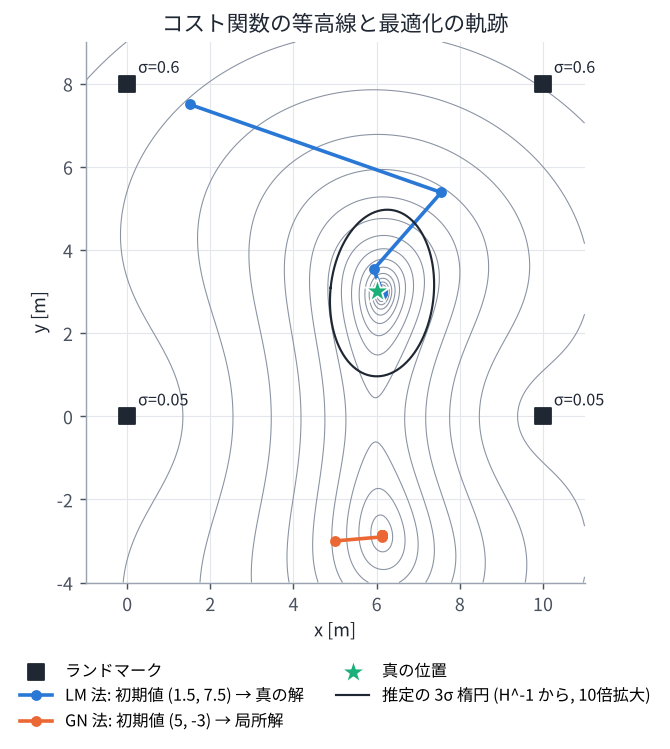

02. 確率と最小二乗 (ガウス分布・ガウス・ニュートン法)
この章のゴール
- センサのノイズを正規分布 (ガウス分布) と共分散行列で表せる
- マハラノビス距離と「情報行列 = 共分散の逆行列」の意味が分かる
- 「もっともらしい状態を探す」ことが「重み付き最小二乗問題を解く」ことになる理由が分かる
- ガウス・ニュートン法 / レーベンバーグ・マーカート法の手順を説明できる
- 初期値が悪いと局所解に落ちることを体験する
論文とのつながり 論文のコスト関数 \(F(\mathcal{X})\) は、すべての因子の「誤差の 2 乗 (マハラノビス距離)」の和です。 これを最小にする状態を、GTSAM (iSAM2) が内部でガウス・ニュートン法の仲間を使って求めています。 GICP が使う「分布同士の距離」もマハラノビス距離そのものです。
1. ノイズを分布で表す
センサの測定値には必ずノイズが乗ります。1 次元なら、真値 \(\mu\) の周りに標準偏差 \(\sigma\) でばらつく 正規分布 \(\mathcal{N}(\mu, \sigma^2)\) でモデル化するのが基本です。
多次元 (例えば 3 次元の点の位置) では 共分散行列 \(\boldsymbol{\Sigma}\) を使います。
共分散行列は「どの方向にどれくらいばらつくか」を表し、等確率の線は 楕円 (3D なら楕円体) になります。 固有ベクトルが楕円の軸の向き、固有値の平方根が軸の長さ (標準偏差) です。
点群との関係: 平らな壁の上の点を集めて共分散を計算すると、壁に沿う 2 方向には大きく、 壁に垂直な方向には小さい「平たい楕円体」になります。GICP はこれを「面の形」として利用します (03 章)。
2. マハラノビス距離と情報行列
誤差ベクトル \(\mathbf{e}\) の「大きさ」を、ばらつきを考慮して測るのが マハラノビス距離 です。
- ばらつきが大きい方向 (不確かな方向) の誤差は小さく数える
- ばらつきが小さい方向 (確かな方向) の誤差は大きく数える
\(\boldsymbol{\Omega} = \boldsymbol{\Sigma}^{-1}\) を 情報行列 と呼びます。「情報が多い = 確信が強い」方向ほど値が大きくなります。
計算上は、\(\boldsymbol{\Omega} = \mathbf{L}\mathbf{L}^\top\) と分解 (コレスキー分解) して \(\mathbf{r} = \mathbf{L}^\top\mathbf{e}\) とすれば、 \(\mathbf{e}^\top\boldsymbol{\Omega}\mathbf{e} = \lVert\mathbf{r}\rVert^2\) という普通の 2 乗和になります。これを 白色化 と呼びます。
3. もっともらしい状態 = 最小二乗の解
状態 \(\mathbf{x}\) (例: ロボットの位置) から観測 \(\mathbf{z}_k\) を予測する関数 \(h_k(\mathbf{x})\) があり、 観測ノイズが正規分布だとします。すべての観測が独立なら、観測が得られる確率 (尤度) は
です。この確率を最大にする \(\mathbf{x}\) (最尤推定) を求めたいのですが、対数を取ってマイナスを掛けると
という 重み付き最小二乗問題 になります。事前分布 (前もって分かっている情報) も同じ形の項として足せるので、 最大事後確率 (MAP) 推定も同じ形です。
論文の \(F(\mathcal{X})\) はまさにこの形で、各因子が \(\lVert \cdot \rVert^2_{\boldsymbol{\Sigma}}\) の項 1 つ (またはその和) に対応します。
4. ガウス・ニュートン法
\(h_k\) が非線形だと一発では解けないので、線形化して少しずつ改善します。 残差を \(\mathbf{r}(\mathbf{x})\) (白色化済み) とまとめて書き、今の推定値 \(\mathbf{x}_0\) の周りで 1 次近似します。
ここで \(\mathbf{J}\) はヤコビアン、\(\boxplus\) は「状態に更新量を足す」操作です (回転なら \(\mathbf{R}\operatorname{Exp}(\boldsymbol{\delta})\)、01 章)。 \(\lVert\mathbf{r}_0 + \mathbf{J}\boldsymbol{\delta}\rVert^2\) を最小にする \(\boldsymbol{\delta}\) は、次の 正規方程式 の解です。
手順は次の繰り返しです。
- 今の推定値で残差 \(\mathbf{r}_0\) とヤコビアン \(\mathbf{J}\) を計算する
- \(\mathbf{H} = \mathbf{J}^\top\mathbf{J}\)、\(\mathbf{b} = \mathbf{J}^\top\mathbf{r}_0\) を作る
- \(\mathbf{H}\boldsymbol{\delta} = -\mathbf{b}\) を解く
- \(\mathbf{x} \leftarrow \mathbf{x} \boxplus \boldsymbol{\delta}\) と更新する。\(\boldsymbol{\delta}\) が十分小さくなったら終了
\(\mathbf{H}\) は ヘッセ行列の近似 で、因子ごとの \(\mathbf{J}_k^\top\mathbf{J}_k\) を足し合わせて作れます。 これが後で出てくる「ファクターグラフのスパース性」(05 章) につながります。
5. レーベンバーグ・マーカート (LM) 法
ガウス・ニュートン法は、線形近似が悪い (初期値が遠い) と大きく飛びすぎることがあります。 LM 法は、\(\mathbf{H}\) に「ダンピング」を足して慎重に進みます。
コストが下がれば \(\lambda\) を小さく (ガウス・ニュートン法に近づける)、上がれば \(\lambda\) を大きく (勾配降下法に近づける) します。
GLIM の設定にある use_isam2_dogleg の Dogleg 法も、同じ目的の別の工夫です。
6. 初期値と局所解
非線形最小二乗は、コスト関数の谷が複数あると、初期値の近くの谷 (局所解) に落ちます。 演習 2 では、精度の良い 2 つのランドマークが一直線上に並んでいるせいで、「線で折り返した位置」にも谷ができ、 下側から始めると間違った位置に収束する様子が見られます。

論文とのつながり: スキャンマッチングも非線形最小二乗なので、初期値が悪いと間違った位置に合ってしまいます。 論文の手法では、IMU で予測した姿勢を初期値に使うので、毎フレーム良い初期値から始められます。
7. 推定の不確かさと「退化」
解の近くでは、\(\mathbf{H}^{-1}\) が推定値の共分散の近似になります (演習 2 の楕円)。
\(\mathbf{H}\) のある方向の固有値が 0 に近いと、その方向は 観測から決まらない ことを意味します。 これを 退化 (degeneracy) と呼びます。例えば:
- 長い廊下: 壁が平行に続くので、前後方向の位置がスキャンマッチングで決まらない
- 広い平面: 平面に沿った移動が決まらない
このようなとき、IMU など他の情報を同じ最適化に入れておくと、決まらない方向を補ってくれます。 これが 密結合 (tightly coupled) の大きな利点です (06 章)。
8. 外れ値とロバストカーネル
人や車などの動くものに当たった点は、地図と合わない「外れ値」になります。 2 乗誤差は大きな誤差を過大に数えるので、外れ値に引っ張られます。 対策として、誤差が大きいほど重みを下げる ロバストカーネル (Huber, Cauchy など) がよく使われます。 GICP 系の手法では、対応点を探す距離に上限を設ける (遠すぎる対応は使わない) ことも同じ効果を持ちます。
演習 2
python exercises/ex02_least_squares.py
- ガウス・ニュートン法と LM 法で、ランドマークまでの距離から位置を推定する
- 初期値によって局所解に落ちることを確認する
- センサの精度の違いを重み (情報行列) で入れると、平均的な精度が良くなることを 2000 回の試行で確認する
- \(\mathbf{H}^{-1}\) から推定の不確かさ (楕円) を描く
理解度チェック
- 共分散 \(\boldsymbol{\Sigma}\) と情報行列 \(\boldsymbol{\Omega}\) の関係は? 「情報が多い」とはどういう状態?
- 観測ノイズが正規分布のとき、最尤推定が最小二乗になるのはなぜ?
- ガウス・ニュートン法の 1 ステップで解く方程式を書け。
- 長い廊下でスキャンマッチングが苦手なのはなぜ? \(\mathbf{H}\) の言葉で説明せよ。
答えの例
- \(\boldsymbol{\Omega} = \boldsymbol{\Sigma}^{-1}\)。ばらつき (分散) が小さく、値に強い確信がある状態。
- 正規分布の確率密度は \(\exp(-\frac{1}{2}\text{マハラノビス距離}^2)\) の形なので、対数を取ると 2 乗誤差の和になり、確率最大 ⇔ 2 乗和最小になる。
- \(\mathbf{J}^\top\mathbf{J}\,\boldsymbol{\delta} = -\mathbf{J}^\top\mathbf{r}\)。
- 廊下の前後方向に動いても点群の見た目がほとんど変わらないので、その方向の \(\mathbf{H}\) の固有値がほぼ 0 になり、位置が決まらない (退化)。
もっと知りたい人へ
- F. Dellaert, M. Kaess, "Factor Graphs for Robot Perception," Foundations and Trends in Robotics, 2017.
- K. Madsen, H. B. Nielsen, O. Tingleff, "Methods for Non-Linear Least Squares Problems," 2004. (無料 PDF)